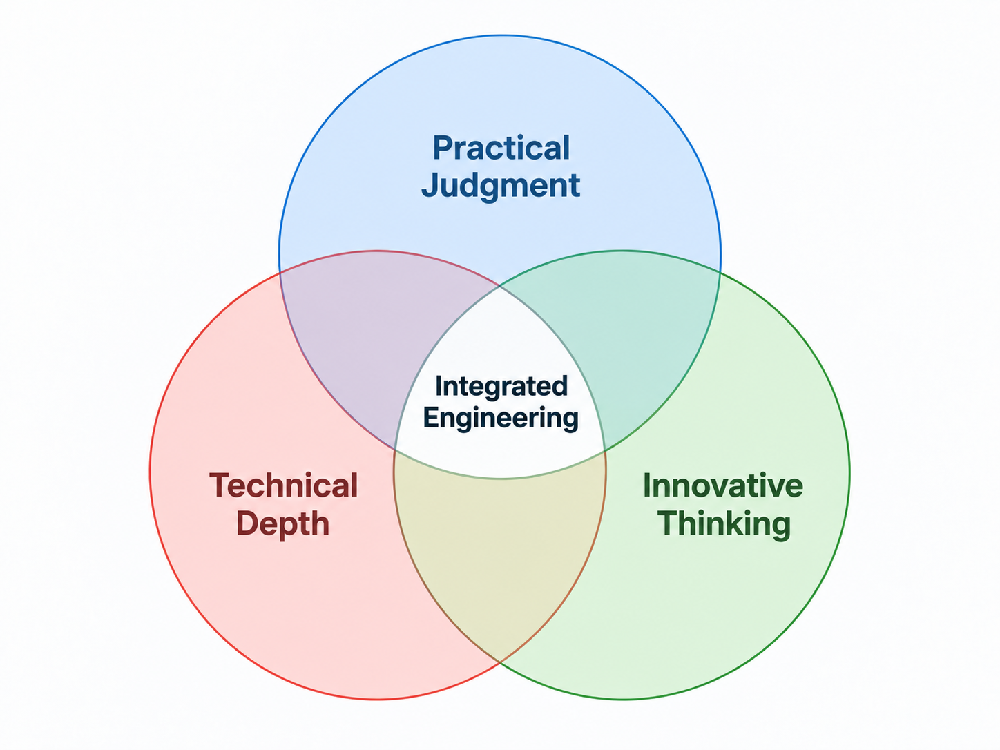
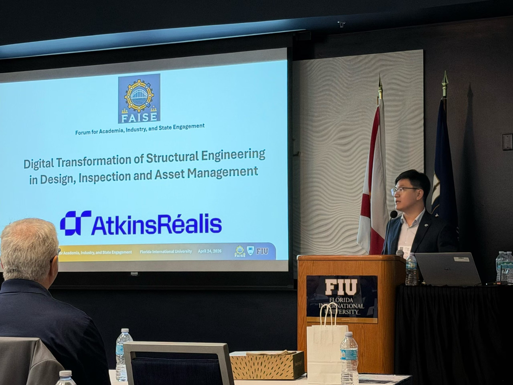

01
Analysis
Advanced structural analysis focused on load paths, behavior, demand, and performance under service and extreme conditions.
Explore analysis →The effective and efficient infrastructure engineering solutions emerge when technical depth, practical judgement, and innovative thinking are integrated.

OVERVIEW
Jiayi Ding is a bridge and structural engineer specializing in the analysis, design, assessment, rehabilitation, and lifecycle management of transportation structures.
His work focuses on the analysis, design, and maintenance of bridges and transportation structures, with particular emphasis on design, mechanics, constructability, nondestructive testing, and experimental investigations into design methodologies to improve structural reliability, performance, and extend service life.
He has also contributed to emerging digital approaches such as NDT and digital twins in transportation infrastructure asset management.
Learn more about Jiayi’s engineering background and approach →
CORE AREAS OF FOCUS
Jiayi’s technical work spans the full lifecycle of bridge and transportation structures, combining advanced analysis and design with field evaluation, asset management, rehabilitation, and retrofit strategies.
Advanced structural analysis focused on load paths, behavior, demand, and performance under service and extreme conditions.
Explore analysis →Design of bridge and transportation structures with emphasis on mechanics, constructability, code compliance, and efficient delivery.
Explore design →Engineering strategies for service-life extension, asset performance, condition evaluation, and data-informed management.
Explore asset management →Nondestructive testing, inspection-informed engineering, diagnostic load testing, and field validation of structural behavior.
Explore NDT & field investigation →Rehabilitation, strengthening, and retrofit strategies that restore capacity, improve performance, and extend structural service life.
Explore rehabilitation & retrofitting →Jiayi develops integrated digital workflows that connect established structural analysis and design platforms, including OpenBridge, CSI-Bridge, LARSA 4D, and FB-MultiPier, leveraging the strengths of each tool for different stages of project delivery.
These workflows streamline model and loading preparation, transfer information between platforms, and transform large analysis datasets into clear visualizations and engineering summaries that support structural understanding, design decisions, and efficient delivery.
INTEGRATED DIGITAL WORKFLOW
PUBLICATIONS
Selected conference participation and technical presentations. Use the controls to browse highlights, with full details available on the conference page.
CONFERENCES

Complex and Unique Bridges session · Two technical presentations on complex bridge substructure design and soil–structure interaction analysis.
View conference details →
Presentation on digital transformation in bridge design, inspection, and asset management, including parametric design, multidisciplinary coordination, and digital image correlation for structural health monitoring.
View conference details →
Presentation on a rehabilitation method, experimental validation, and diagnostic load testing for precast prestressed slab beam bridges with recurring shear-key deterioration.
View conference details →PROFESSIONAL ENGAGEMENT
As a member of the American Society of Civil Engineers (ASCE), Jiayi engages with professional communities and supports the dissemination of emerging technologies and state-of-the-art practices in structural engineering, with a focus on integrating digital parametric design techniques.
He also contributes through technical outreach and mentoring, helping students connect structural engineering concepts with hands-on bridge design and construction activities.